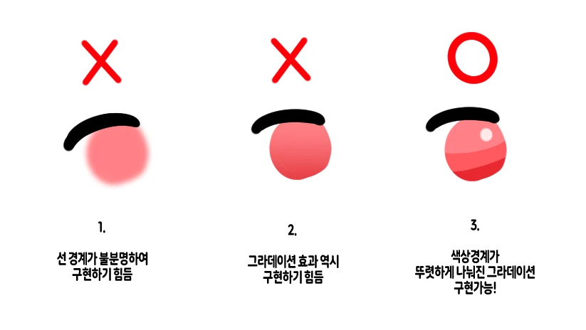
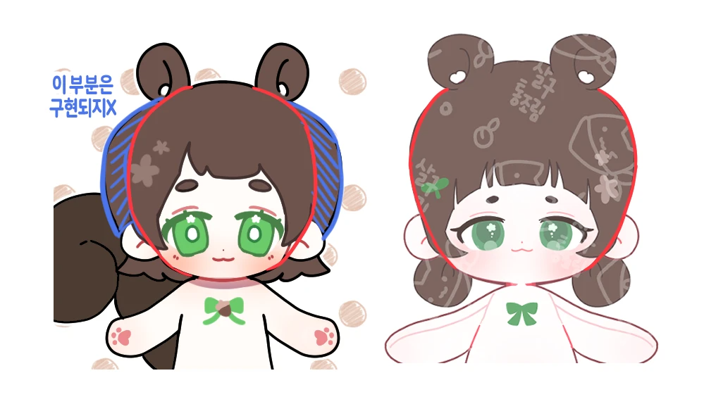
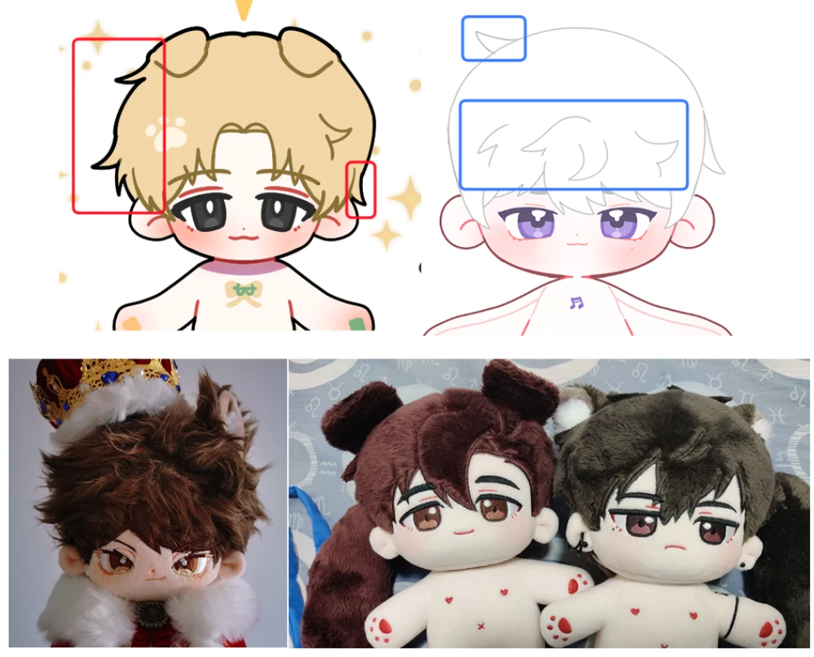
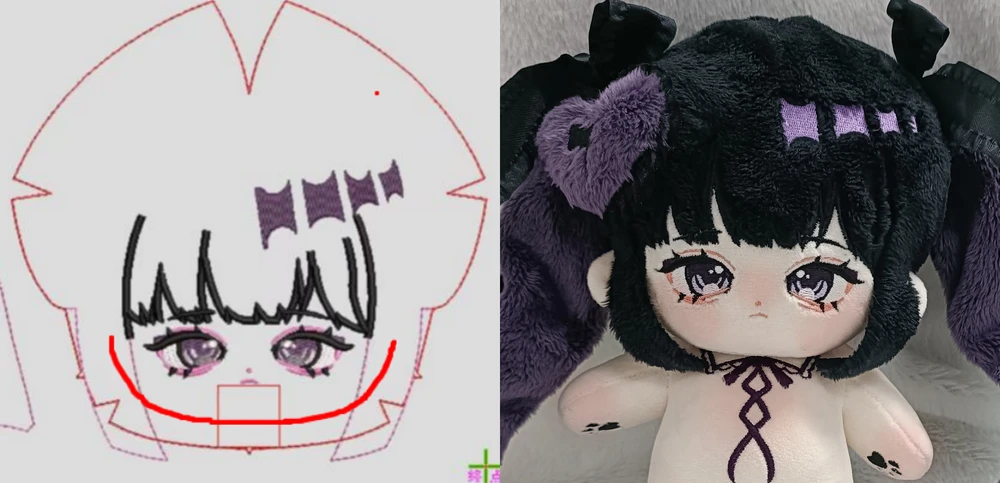
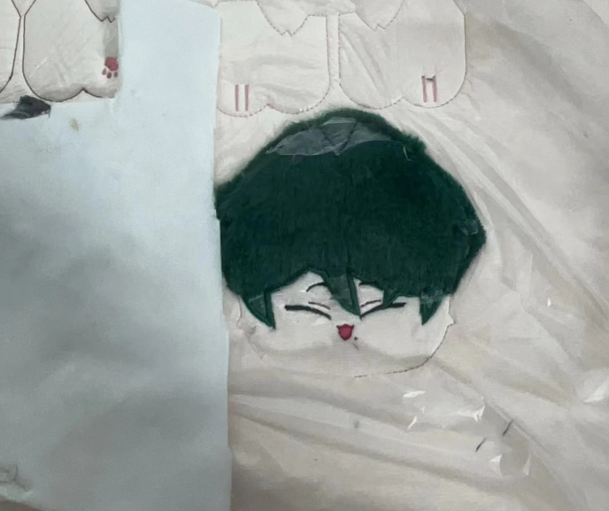

[솜인형 관련 팁]
솜인형 도안부터 사후 관리까지의 팁들 입니다!
[ 도안 제작 팁 ]
1. 도안 크기와 전자자수
전자 자수를 뜰 때는 우선 도안을 아래 레이어에 깔고, 그 위에 트레이싱을 하여 작업이 이루어지기에
대부분의 인형은 도안 = 전자 자수 = 면피의 모습이 일치합니다.
그렇기에 도안을 작업할 때에는 공장이 그대로 본 뜰 수 있는 도안의 정확한 형태와 높은 해상도가 필요합니다.
즉, 이미지 파일의 크기가 클 수록 좋은 것이기에 최소 가로, 세로 2000px로 그리는 것이 좋습니다.
너무 클 경우에도 전송하는 과정에서 화질이 저하되는 경우가 생기기에 너무 크게 그려도 좋지 않습니다.

또한 형태가 불명확한 블러 효과나 그라데이션 효과는 실제로 구현되기 매우 힘듭니다.
2. 도안 그리면서 하는 실수

1) 앞머리 라인과 얼굴 라인을 통합하기
가장 흔하게 볼 수 있는 실수 입니다.
앞머리가 끝나는 구간 (귀가 시작되는 부분)과 얼굴 라인 부분이 하나가 되도록 계산하여 그리는 게 좋습니다.
이미지 상에서 파란색으로 빗금이 칠해진 부분은 구현되지 않습니다.
그래서 봉제 시 생각했던 것보다 미간이 넓어지거나, 머리 자수가 밀리거나 하는 문제가 생길 수 있으니 고려하여 작업해주세요.

2) 잔머리 최소한으로 줄이기
빨간색 박스에 있는 것처럼 헤어라인과 구분되지 않는 얇은 잔머리는 표현되기 어려울 뿐더러,
자수와는 다르게 원단을 따로 잘라 작업하는 과정을 거치기 때문에
그 수가 많으면 되려 지저분해 보이거나 모양새가 이상해 보입니다.
따라서 잔머리가 많이 필요한 인형의 경우에는 아래 방법대로 하면 깔끔하게 표현할 수 있습니다.
- 2~3개 이하의 잔머리를 헤어라인 바깥에 명확하게 그리기
- 헤어라인 안쪽에 뻗친 머리 표현하기
- 특수 원단 (물빨래 토끼털, 새토끼털, 모헤어 등)을 이용해 질감 살리기
3. 기본적인 팁
- 캐릭터의 특징 살리기
- 최대한 모든 부분은 대칭자를 이용해서 그리기
- 표정 선택, 얼굴 주차는 신중하게, 잘 보이게 그리기
- 공장에서 찾기 쉬운 색상을 선택하면 편하다
- 공장에서 보여주는 예시 이미지를 첨부하면 제작에 용이하다 (귀, 꼬리, 손발 자수 등)
- 요구사항을 중국어로 적으면 제작할 때 수월하다
- 원하는 원단 종류를 생각하며 그리기
[ 제작 과정 팁 ]
면피는 가로로는 잘 늘어나지만 세로로는 눈에 띄게 늘어나지 않습니다.
전자 자수에서 눈 크기가 조금 큰데? 싶으면 세로 길이를 조금 줄이는 것을 추천 드립니다.
미간 넓이는 개인취향 차이이지만, 주관적으로는 보통 미간에
눈동자 하나가 온전하게 들어가는 정도로 배치하는 것이 가장 적당합니다.

전자 자수나 면피에서 봉제라인을 그려보면 명확히 알기 쉽습니다.
이 부분을 신경 쓰시면 턱거지(턱이 짧음)나 턱부자(턱이 긺)를 예방할 수 있습니다.
면피 사진을 받았을 때, 본인이 고른 천 샘플의 색과 얼굴자수의 색상이 달라보인다면
공장에게 면피 옆에 '흰색 종이'를 둬달라고 요청합니다.
자동으로 색감이 조정이 되어 그나마 객관적으로 나타납니다.
중국어가 서툴다 싶으면 피드백 할 때 꼭 이미지를 사용해주세요.
[ 수정 팁 ]
수정에 정답은 없습니다.
보편적인 미의 기준은 있겠으나 결국 본인 마음에 들어야 하는 문제이기 때문에
본인의 취향대로 수정하시면 됩니다.
물론 공장에서 정해져 있는 인형의 바디나 얼굴형 변경은 불가능합니다.(인간형 기준)
좌우대칭 수정요청도 많은데, 전자 자수상으로 좌우대칭인 이상
입체가 되는 과정에서 크지 않은 비대칭은 발생할 수 밖에 없기 때문에 이 부분도 수정이 대체로 반영이 잘 안됩니다.
자수가 깔끔하게 안나온다 싶으면 확실하게 모양을 수정해 주시는게 좋습니다.
<기본적인 수정안 가이드>
- 인형의 수정 전, 수정 후 이미지 첨부해주세요.
사진 위에 리터칭을 해야 하며, 자수의 경우 리터칭한 선 위에 그대로 선을 따서 수정하기에
비대칭이면 그대로 비대칭이 되니 단순한 수정이 아닌 이상 깔끔하게 그려야 합니다. - 수정안에 들어가는 중국어는 최대한 간결하게 작성해주세요.
ex) 눈썹을 올린다, 앞머리를 내린다, 크기를 키운다 등 - 작업자는 수정안을 인쇄해서 봅니다.
인쇄해서 봤을 때 사진과 글이 너무 작으면 보기가 힘들어 누락이 잘 되고, 여러 장이면 또 누락이 잘됩니다.
또한 실작업자는 인쇄를 해서 보기 때문에 GIF는 큰 의미가 없습니다. - 수정안의 비율은 A4를 크게 벗어나지 않게 해주세요.
위의 내용과 같은 이유로 결국 인쇄를 하기에 크게 벗어나면 이미지가 작아집니다.
이래도 모르겠으면 수정안 커미션을 작성해 주시는 분을 찾아서 제작하셔도 됩니다.
[ 사후 관리 팁 ]
솜인형 경락법
기본적인 솜인형의 형태를 조절하는 방법입니다.
솜인형 바늘 경락법
바늘을 활용하여 솜인형 내부에 채워진 솜을 재배치해 형태를 조절하는 방법입니다.
솜인형 볼터치 & 옷 입히기
솜인형에게 생기를 부여하고, 옷을 입히는 방법입니다.